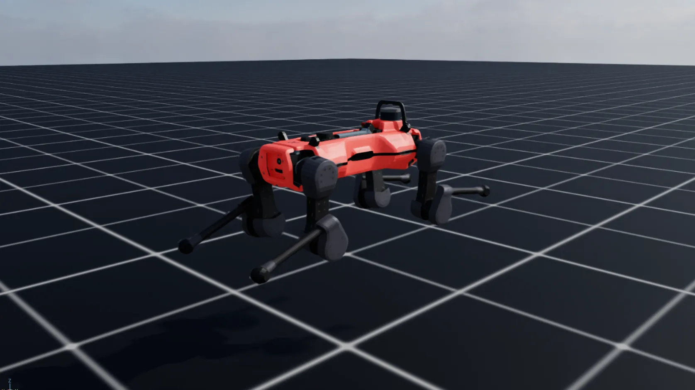

ANYmal Example: PACE Workflow¶
This section demonstrates the complete PACE workflow using ANYmal as an example platform. While the data collection is typically performed directly on the real robot hardware, we present the full pipeline in simulation to illustrate the process and enable safe testing and validation prior to hardware deployment.
Data Collection¶
This step generates excitation data required for evolutionary parameter identification. The procedure fixes ANYmal in mid-air and applies a crafted feed-forward joint-space trajectory designed to excite all joints simultaneously.
Trajectory description¶
- Duration: 20 seconds
- Signal type: Chirp trajectory
- Frequency range: 0.1 – 10 Hz
- All joints are excited concurrently
The following physical properties are configured to closely match the estimated parameters of the real ANYmal hardware:
- Joint armature
- Viscous damping
- Static friction
- Joint bias
- Actuator delay
This setup allows realistic synthetic data generation while avoiding risk to the real system.
Execution¶
Inside the virtual environment, run:
cd ~/pace-sim2real
python scripts/pace/data_collection.py

The collected data is saved in:
pace-sim2real/data/anymal_d_sim/chirp_data.pt
This dataset serves as the input for the PACE optimization pipeline.
Evolutionary Parameter Identification¶
This step runs the PACE evolutionary optimization to identify actuator and joint parameters that best match the recorded trajectory.
Configuration¶
- Number of environments: 4096
-
Total identified parameters: 49
- 12 joint armature values
- 12 viscous friction values
- 12 static friction values
- 12 joint bias values
- 1 global delay
In this example, the optimizer re-estimates the parameters used in the simulation data collection stage, serving as a proof-of-correctness. In real deployments, this step is used to identify parameters of custom hardware platforms.
Execution¶
Inside the virtual environment, run:
cd ~/pace-sim2real
python scripts/pace/fit.py --headless
The optimization progress can be monitored using TensorBoard in:
pace-sim2real/logs/pace/anymal_d_sim
Performance¶
- Convergence: up to numerical precision (~1e-12)
- Runtime: approximately 2:15 hours on an NVIDIA RTX 3080
Empirically, final scores below 0.005 indicate a high-quality fit and typically lead to strong sim-to-real transfer performance (e.g. ANYmal using real data is below 0.003, compare paper Figure 9.).

Testing the Identified Parameters¶
This step evaluates the optimized parameters by visualizing the best-matching trajectory.
The script:
- Plots the best simulated trajectory
- Compares it with the original collected data
- Prints the evolution of the best parameters across iterations
Execution¶
Inside the virtual environment, run:
cd ~/pace-sim2real
python scripts/pace/plot_trajectory.py --plot_trajectory
This provides a final verification step before deploying parameters into a learning or control pipeline.
Deploying on Hardware¶
To use the identified parameters in your learning environment, integrate the PACE actuator model into your project.
Copy the following files (or directly import them in your learning environment):
pace-sim2real/source/pace_sim2real/pace_sim2real/utils/pace_actuator.pypace-sim2real/source/pace_sim2real/pace_sim2real/utils/pace_actuator_cfg.py
Use the following procedure:
- Import
PaceDCMotorandPaceDCMotorCfginto your project. -
During initialization, set:
- Joint delay
- Joint bias
using the values obtained from the parameter identification step.
-
Prior to training, configure your articulation object with the optimized parameters for:
joint_armaturejoint_viscous_frictionjoint_friction
Recommended validation step¶
Before training locomotion policies, we recommend replaying the collected real-world data within your learning environment. This serves as an additional sanity check to ensure the simulation faithfully reproduces the system dynamics prior to policy optimization.